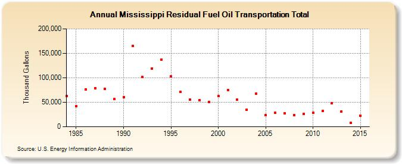

|
|||||
|  | |||||
| Mississippi Residual Fuel Oil Transportation Total (Thousand Gallons) | |||||
| Decade | Year-0 | Year-1 | Year-2 | Year-3 | Year-4 | Year-5 | Year-6 | Year-7 | Year-8 | Year-9 |
|---|---|---|---|---|---|---|---|---|---|---|
| 1980's | 63,010 | 41,869 | 76,362 | 79,196 | 77,565 | 56,303 | ||||
| 1990's | 60,954 | 165,370 | 101,225 | 119,343 | 137,173 | 103,276 | 71,219 | 55,824 | 54,858 | 50,725 |
| 2000's | 62,304 | 75,239 | 55,179 | 35,115 | 67,465 | 23,449 | 28,137 | 27,462 | 23,403 | 26,140 |
| 2010's | 28,201 | 32,295 | 48,036 | 31,574 | 7,810 | 22,223 |
| - = No Data Reported; -- = Not Applicable; NA = Not Available; W = Withheld to avoid disclosure of individual company data. |
| Release Date: 12/5/2016 |
| Next Release Date: Last Week of November 2017 |